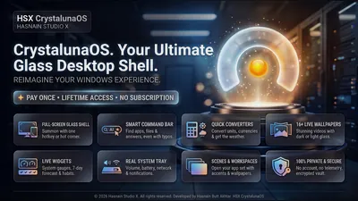
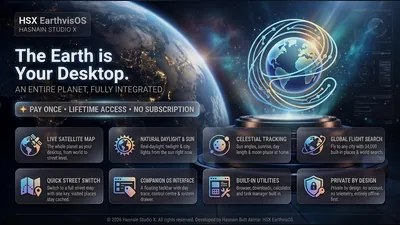
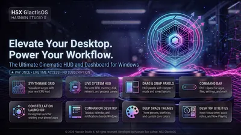
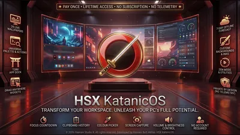
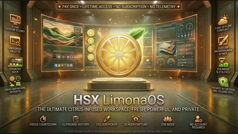
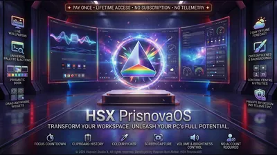
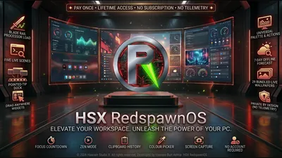

Desktop shells and customisation apps for Windows
Whole new desktops for Windows. Each shell brings its own dock, widgets, command palette and live wallpapers, and some lay a living planet or a synthwave grid behind your work. Docks and seasonal wallpapers sit alongside them for a lighter change.
Why these run on your own machine
A desktop shell sees more of your machine than almost anything else you install: every app you open, every window, your clipboard. That is why none of these shells create an account or send anything off the device. The Windows taskbar only steps aside after you agree, and it comes straight back the moment you choose Desktop mode or exit.
What to check before you buy anything in this category
- Whether it can hand the desktop back
- A good shell restores the Windows taskbar the instant you leave it, and never leaves your PC stuck in its own layout.
- What it reads, and where that goes
- A shell reads your apps, windows and system readings to show them to you. None of it should leave the machine.
- How heavy it is
- Live wallpapers should follow what your PC is doing without stealing the performance you need for real work.
7 desktop shell applications available now

CrystalunaOS Windows Private Windows desktop shell and launcher Clean app launcher with instant search Customisable widget panels: clock, notes, system stats Multi-workspace management Full details
EarthvisOS Windows Turn your desktop into a live map of the world Live world map as your desktop shell Home place, saved layout and offline tile cache Taskbar, windows and clipboard history stay on-device Full details
GlactisOS Windows Synthwave command deck for the Windows desktop Synthwave desktop command deck Local-first layout and settings No telemetry and no accounts Full details
KatanicOS Windows A katana-styled desktop shell for Windows Five inks: Shu, Kin, Sakura, Ai and Matcha World clocks, weather, system vitals and now playing on the desk Command palette to search and launch every app on your PC Full details
LimonaOS Windows Your desktop, freshly squeezed Lemon-slice dial for desk, settings, help and about Weather, quick notes, now playing and live processor rings on the desk Command palette to search and launch every app on your PC Full details
PrisnovaOS Windows Your desktop, cut from light Five inks: Spectrum, Glacier, Ember, Orchid and Verdant World clocks, weather, system vitals and quick notes on the desk Command palette to search and launch every app on your PC Full details
RedspawnOS Windows Your PC, built for play Five inks: Venom, Redline, Frost, Volt and Ultra Dock edge that pulses with the sound your PC is playing Command palette to search and launch every app on your PC Full detailsQuestions about desktop shell apps
Can I go back to the normal Windows desktop?
Yes. Desktop mode, the tray icon and Exit all bring the Windows taskbar straight back, and it returns on its own if the shell closes.
Do the shells send anything about my PC?
No. App lists, windows and system readings are read only to show them to you on screen, and nothing is transmitted.
Can I use my own wallpaper?
Yes. The shells let you use your own pictures, and each one lists the wallpaper options it supports on its own page.
Is there a subscription?
No. Every application is a free trial followed by one purchase.
Other parts of the catalogue
Full Windows catalogue · Privacy policies · About the studio
Hasnain Studio X™ is a trade mark of Hasnain Studio X. Product names shown on this page are trademarks of Hasnain Studio X.